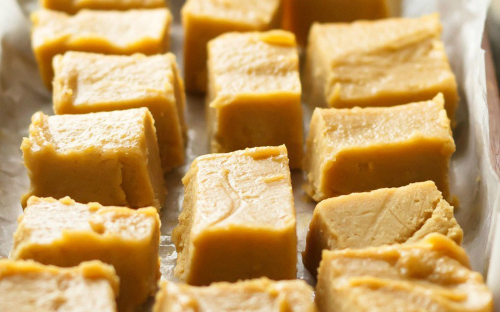

Peanut Butter Fudge

This was my grandfather's recipe, and it is also a family favorite
(miss you, Grandpa)
This has always been a holiday favorite-
and sometimes just a very special treat.
My grandfather made this, and my dad, too,
and so rarely did I ever even have other fudges
that it really didn't occur to me for a long time
that most people don't call peanut butter fudge
simply fudge.
Ingredients
- 14 large marshmallows (or 140 small)
- 2 cups sugar
- pinch salt
- 2/3 cup evaporated milk
- 1 cube (1/2 cup) butter
- 1 cup peanut butter
- 1 teaspoon vanilla
Steps
- Put first 5 ingredients in a large pot
- Heat the pot on the stove
- Bring to a rolling boil - boil for 6 minutes
- Add peanut butter and vanilla
- Whip it until it starts getting stiff
- Pour it into a greased pan
- Cut it when it cools
- Enjoy!